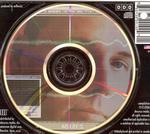

| Artist: | Antherius |
| Title: | 2006-01 |
| Label: | Decursus 00102-001 |
| Length(s): | 41 minutes |
| Year(s) of release: | 2006 |
| Month of review: | [12/2006] |
| 1) | Prologue | 0.39 |
| 2) | Cirrus Winds | 5.02 |
| 3) | Turnpike | 4.20 |
| 4) | Mannheim Dynamic | 3.59 |
| 5) | T.O.U. (thinking Of You) | 4.25 |
| 6) | Spiraling Around | 2.57 |
| 7) | Recursion | 4.41 |
| 8) | Cresent Rim | 3.40 |
| 9) | Ethereal Passage | 5.01 |
| 10) | Distant Redwoods | 3.37 |
| 11) | Reaching Over | 2.52 |
If you're still with me after the shenanigans described before you must be into nineties stuff, as apparently Antherius is, since he refers to that period in time so often stylistically and technically. But there's more: TOU (thinking of you) takes on the sweetest of tones. In fact, so sweet I think I might lose some teeth over it had it lasted a longer than its four and a halve minutes.
From this on the music takes a tone that is even more non commitant and gratuitous than aforementioned nineties Tangerine Dream, which I thought was pretty bad in this area already. According to Antherius' site not all the music originates from electronics, considering the mention of instruments such as drum sets and ethnic percussion. Unfortunately this has not led to a genuine feel in the music's sound: it all sounds so electronic.
Ethereal Passage is an exception to the rule: the track has some nice tranquil moments and the metallic percussion is reduced to the barest of non essentials. On the other hand: show closer Reaching Over reminded me of the theme of the Australian soap series (don't ask) Neighbours.
www.antherius.com